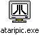

Ecran
d'intro
HELLO ATARI MANIACS ! MJJPROD PRESENTS HIS NEW PRODUCTION DONE FOR THE ATARI STE ON AUGUST 2002 !!! THIS IS A MODULE-PLAYER MADE IN GFA BASIC WITH SOURCES OF H.M.S. BY ESAT. THIS PLAYER WORKS ON ATARI STE 1 MB, FALCON AND UNDER STEEM V 2.4. KEYS TO USE : F1 TO REACH MODULES 1 TO 8, F2 TO REACH MODULES 9 TO 16, SPACE TO DISPLAY INFORMATIONS OF THE MODULE PLAYED AND ESCAPE TO QUIT THAT PLAYER ... YOU CAN EDIT AND CHANGE THE CONFIGURATION FILE PROPERTIE TO PERFORM OUTPUT SOUND. ALL MODULES COMPRESSED BY ATOMIX PACKER V 3.5 BY VMAX (HI MIKOU!), ALL FILES ARE AVAILABLE ON THE WEB ON HTTP://WWW.CHEZ.COM/STALIVE, THE WEBSITE OF SIR FEL'X... THE MEMBERS OF MJJPROD ARE FEL'X (THE BOSS) CODERS ARE BIGFOOT - BLINIS - SQUALE - ULTRA (HI MIKOU!) - TOOSEB (NEW ASM CODER WHICH HAS THE CAKOS-MANIA) AND ZORRO 2 (GFA CODER WHO MADE THIS LITTLE INTRO AND MJJPLAYER) THE GFXMEN ARE GOLDENBOY (HE LOVES COCCINELLE !) - WILFRIED (HE LOVES TINY MOULES) AND C-REM (HE DRAW ALL THE TIME ON HIS ATARI ST AND Q3 DEFRAG!) AND THE MUSICIANS ARE SMITH AND FLOPPY........... ALL EVENTS ON THE MJJPROD'S WEBSITE AT HTTP://MJJPROD.9ONLINE.FR. -=* MJJ MODULES PLAYERS V 1.0 *=- THIS PRODUCTION HAS BEEN UPGRADED FOR FALCON BY STRIDER/SUPREMACY, USING THE DSP REPLAYER BY BITMASTER. MUZAXX FROM TAO MJJPROD PRODUCTION AUGUST 2002 Y'A ENCORE QUELQU'UN DEVANT L'ECRAN !?! MJJPROD FAIT UN PETIT COUCOU AUX PARTICIPANTS DE LA MJJPARTY 2 ET REGRETTE QUE BRUME NE PUISSE PAS VENIR EN SOUHAITANT UN BON RETABLISSEMENT A SA MAMAN... DOMMAGE QUE BIGFOOT NE PUISSE PAS VENIR NON PLUS, J'ESPERE QUE TU RESSORTIRA TON FALCON UN JOUR POUR NOUS MONTRER TON DIGIT SUR LE PETIT SUISSE !!!!!!!!!!!!!!!!!! BIG MERCI C-REM POUR LA CORRECTION DE LA PARTIE ANGLAISE &;-) ET UN GRAND MERCI POUR NOS AMIS LES WEBMASTERS ATARISTES FRANCOPHONES : OLIVIER (MR NOURS), PHILIPPE (CB), FLORENT (ATARI.GAMES), FRED (LANKHOR), CLAUDE (MOA), BRUNO (BRUME), STEPHANE (STRIDER) ET TOUT CEUX QUE J'AI OUBLIE... BON BEN JE CROIS QUE J'AI FINI... ET A BIENTOT POUR LA MJJPARTY 2 DEMO.
touche
F1 : sélection des modules de 1 à 8
touche
F2 : sélection des modules de 9 à 16
touche
ESPACE : permet d'accéder à la configuration chargée
au démarrage et aux informations du module joué,
les touches curseurs HAUT et BAS permettent de sélectionner un module. La touche ENTER permet de charger et décompresser le module qui sera joué.
les touches curseurs HAUT et BAS permettent de sélectionner un module. La touche ENTER permet de charger et décompresser le module qui sera joué.
touche
F10 : information sur le programme
touche
ESCAPE : écran de fin, sortie du player
-=
BON
US
=-
STSound Plugin - (c) Arnaud Carré (Leonard/Oxygene)

Atari Picture File Viewer for the PC for Windows - (c) 1999 by Tom Kirk
Atari Picture File Viewer for the PC for Windows - (c) 1999 by Tom Kirk
Soundchip
de Tao (clic droit pour télécharger)
Visualisateur
de fichier image PI1